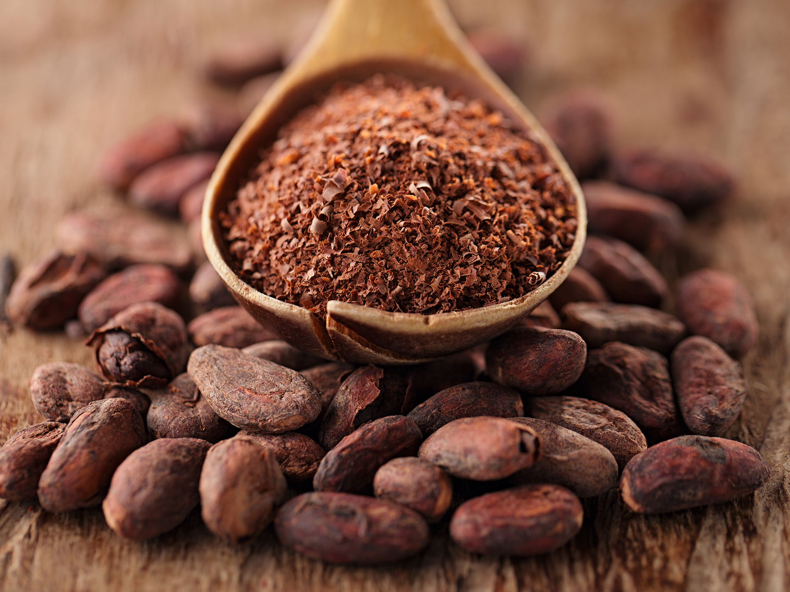

Bertha's Deluxe Chocolates
We make chocolates

Amazing, delicious, mind-bendingly wonderful chocolate. It's pure
joy in every bite and it comes from passion. But for us, it's about
more than chocolate. It's about the land, the people, the dedication
and the interconnected relationships that bind us all.
For us, chocolate isn't just a product, it's a journey from bean to
bar. And while its heart is with the beans themselves, and the
places where they're grown, lovingly reffered to as our "origin",
what we do with those beans is just as important. Our small batch
production is truly an art form. Every aspect of our manufacturing
process is controlled by us. That means we can guarentee that every
step, every ingredient, everything that goes into each bar is as
special as the beans themselves.